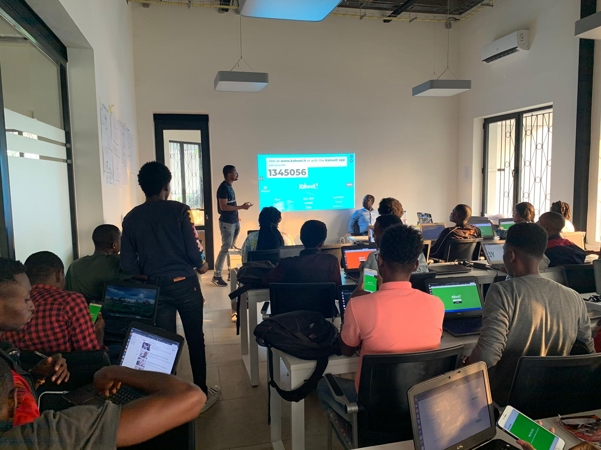

Bienvenu dans le site de Kinshasa Digital Academy
Kinshasa Digital Academy offre des formations certifiantes, intensives
et professionnalisantes dans les technologies de l'information. Nos
formations sont gratuites, professionnalisantes et intensives. Elles
sont ouvertes à toutes et tous sans prérequis préalable sauf une grande
motivation et de la passion pour les TIC. Les formations dure sept mois
et demi et demandent une disponibilité à 100% des apprenant·e·s. Les
places étant limitées, les candidats sont soumis à un processus de
sélection.
La pédagogie active
La pédagogie active désigne un ensemble de méthodes pédagogiques qui ont
toutes en commun la volonté de rendre l’étudiant acteur de ses
apprentissages. Ce type de pédagogie part du principe que c’est en
faisant que l’on apprend, à l’inverse de la pédagogie traditionnelle qui
part de la théorie pour aller vers la pratique. Elle privilégie les
situations authentiques de recherche, d’investigation au cours desquels
l’étudiant doit comprendre et maitriser les différentes ressources que
l’enseignant met à sa disposition . Ces différentes situations ont été
formalisées d’un point de vue théorique tout au long du XXe siècle.
Quelques postulats liés à la pédagogie active :
– On apprend par l’expérience pratique, pas seulement dans un contexte
académique: apprentissage expérientiel – On apprend mieux avec les
autres => socio-constructivisme: apprentissage collaboratif – On apprend
mieux quand on rencontre un problème particulier: apprentissage par
problème – On apprend mieux quand on est impliqué dans un projet
particulier: apprentissage par projet

L’apprentissage et l’implication par le jeu À priori intégrer un jeu dans
son cours semble contraire à ce qui définit traditionnellement
l’apprentissage en classe, car le jeu semble plutôt synonyme de
distraction et de frivolité. Pourtant, on entend parler depuis quelques
années de l’apprentissage par le jeu, voire de jeux sérieux dans
l’enseignement supérieur. l’activité ludique devient pertinente lorsque
l’on cherche à : évaluer une situation complexe, comme par exemple un
savoir-faire technique, un savoir-être. Alors, les critères de décision,
de règle et d’incertitude peuvent rentrer dans l’équation de l’évaluation.
agir sur la motivation intrinsèque et/ou extrinsèque de l’élève. Le
plaisir découlant de l’expérience de jeu peut se conjuguer avec celui
d’apprendre ou le suppléer. améliorer la concentration sur des tâches
spécifiques. L’expérience de jeu maintient l’attention un peu comme pour
l’apprentissage d’un instrument, elle permet sur des tâches déterminées
d’obtenir un meilleur contrôle exécutif au sens de la psychologie
cognitive. se rapprocher des habitudes et des expériences des élèves,
notamment sur le plan des usages des outils numériques.